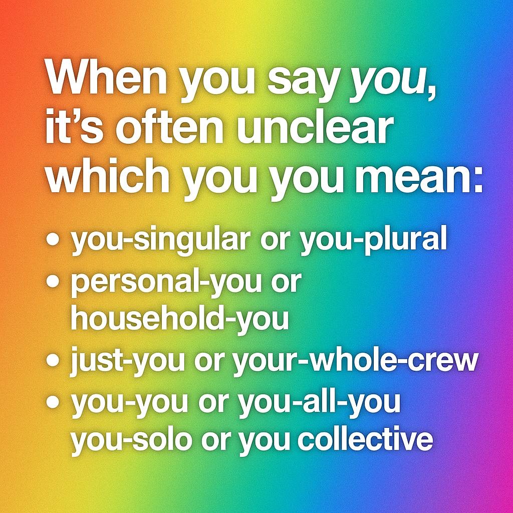

pronoun — wanted: the yous English cannot tell apart wanted
YOO
Second person, with no way to say how many or which: one person, everyone present, a household, a whole crew, or a person plus everyone they speak for. English puts all of them into one syllable, and “you” is criminally unspecific.

When you say you, it's often unclear which you you mean.
EtymologyOld English ēow, originally the plural: the object form of ge, “ye”. English once had two second persons, thou for one person and ye/you for several. Then the plural became the polite form, politeness spread to everyone, and by about 1700 thou was gone from standard speech. English swapped a distinction of number for one of courtesy, and then lost that too. One word now does the work of two, and the language keeps trying to grow the second one back.
NoteThe gaps, as the poster lists them: you-singular or you-plural. Who is being addressed: one person, or the room. personal-you or household-you. An invitation, a bill, a delivery: just you, or everyone at this address? just-you or your-whole-crew. You, or you and the people who come with you: the team, the plus-one, the family. you-you or you-all-you. You as you are, or you as the representative of everyone you speak for. you-solo or you-collective. You acting alone, or you as part of a body that acts. The plural gap has unofficial patches (y'all, youse, yinz, you guys, you lot), each regional, none accepted everywhere. The rest have nothing at all. And the cost is real: “You are invited” (alone, or with a plus-one?), “You need to fix this” (you, or your team?), “I'm sorry you feel that way” (you, or everyone who complained?). Speaking to an AI makes it worse: “you” could mean the model, the product, or the company behind it. The shop is open. One gap, five slots.
Patches already in circulation. Each covers one of the gaps, none covers all of them.
English had a singular second person until about 1700. It survives in prayer, in Shakespeare, and in some Yorkshire speech.
The most successful plural patch, spreading well beyond the South. It even has its own plural-of-plural, all y'all.
A plural made the regular way, by adding -s.
From “you ones”. Local, and proudly so.
Phrases rather than words: unmarked American, British, general. They cover the plural and nothing else; household, crew and collective are still unfilled.